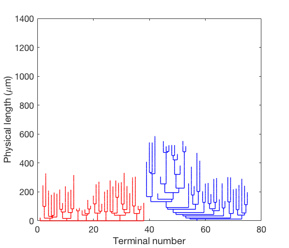
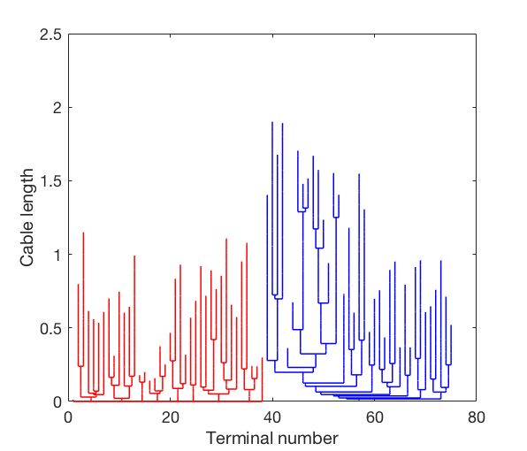
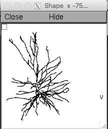
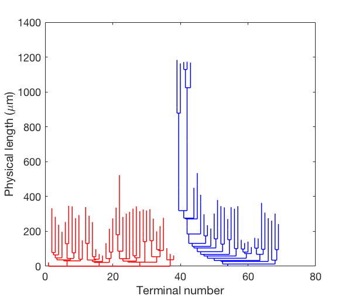
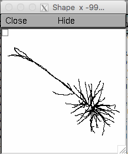

This is the readme for the code associated with the paper:
Deitcher Y, Eyal G, Kanari L, Verhoog MB, Atenekeng Kahou GA, Mansvelder HD, de Kock CPJ, Segev I (2017) Comprehensive Morpho-Electrotonic Analysis Shows 2 Distinct Classes of L2 and L3 Pyramidal Neurons in Human Temporal Cortex. Cereb Cortex 27:5398-5414
http://dx.doi.org/10.1093/cercor/bhx226
This archive containing matlab and NEURON code was contributed by Y Deitcher and G Eyal. The matlab programs requires the TREES toolbox freely available from:
http://www.treestoolbox.org/
To recreate figures 6 A1, B1 dendrograms type Figure_6_A1_B1 on the matlab command prompt. After a minute you should see:


To recreate the inset run the NEURON file 0471.hoc in the Morphs_and_trees folder (type "nrngui 0471.hoc" at the linux command prompt or for more help see
https://senselab.med.yale.edu/ModelDB/NEURON_DwnldGuide.cshtml
Then click on the nrnmainmenu: Graph -> Shape Plot to see:

To recreate figures 6 A2, B2 dendrograms type Figure_6_A2_B2 on the matlab command prompt. After a minute you should see:

 To recreate the inset run the NEURON file 1148.hoc in the Morphs_and_trees folder (type "nrngui 1148.hoc" at the linux command prompt or for more help see
To recreate the inset run the NEURON file 1148.hoc in the Morphs_and_trees folder (type "nrngui 1148.hoc" at the linux command prompt or for more help see
https://senselab.med.yale.edu/ModelDB/NEURON_DwnldGuide.cshtml
Then click on the nrnmainmenu: Graph -> Shape Plot to see:
